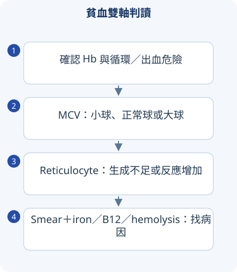

判讀圖解

詳讀 01貧血先分生成不足或流失／破壞
確認 Hb 低後先看 reticulocyte response、MCV、其他血球與 smear。Reticulocyte 百分比會受貧血程度影響，校正／reticulocyte production index 可判斷骨髓是否適當反應。網狀低偏生成不足，高偏溶血／失血但急性早期未必立即上升。
MCV <80 小球、80–100 正球、>100 大球是成人常用分類；多重缺乏可能互相抵銷，使 MCV 正常。正球不是病因診斷，仍可能 CKD、炎症、急性失血或溶血。
詳讀 02小球性貧血：鐵、炎症與 thalassemia
| 檢驗 | 缺鐵 | 炎症性貧血 | Thalassemia trait |
|---|---|---|---|
| Ferritin | 通常低 | 常正常／高 | 通常不低，除非合併缺鐵 |
| Serum iron | 低 | 低 | 可正常 |
| TIBC／transferrin | 常高 | 常低／正常 | 通常不呈典型缺鐵組合 |
| RBC count／MCV | 依嚴重度 | 通常非極低 MCV | MCV 明顯低但 RBC count 相對保留／高 |
寬表格可左右捲動
Ferritin 是 acute-phase reactant，炎症時正常不必然排缺鐵；TSAT、發炎與臨床要整合。Mentzer index 可輔助篩檢，不替代 electrophoresis／基因與完整評估。α-thal trait electrophoresis 可能正常；β-thal trait 常 HbA2 高但缺鐵會影響。
成人男性、停經女性缺鐵要找出血或吸收問題，尤其 GI；不只是補鐵。口服鐵需耐受與服法，IV iron 按適應；療效看 reticulocyte／Hb 趨勢與儲存補足。不能看到 MCV 低就給 thal trait 無止境補鐵。
詳讀 03大球性貧血：B12、folate 與非巨幼紅
Megaloblastic 常 macro-ovalocyte、hypersegmented neutrophil，來自 DNA 合成不足。B12 與 folate 都可升 homocysteine，B12 缺乏可升 methylmalonic acid，惟腎功能會影響。B12 可神經症狀、後柱／周邊病，即使沒有明顯 anemia。
Pernicious anemia 與 intrinsic-factor 缺陷／autoimmunity；胃手術、ileal disease、飲食與部分藥物也可缺 B12。先補 folate 可能改善血球卻掩蓋 B12 神經病，所以兩者一起評估。Alcohol、liver disease、hypothyroidism、reticulocytosis 與 MDS 是 nonmegaloblastic differential。
詳讀 04溶血：先證據，再免疫或非免疫
Hemolysis 常 LDH／indirect bilirubin 高、haptoglobin 低、reticulocyte 上升，單項受肝病／炎症影響。DAT 陽性支援免疫機轉，但須結合病情；warm 常 IgG，cold 常 complement，治療不同。
| Smear／線索 | 機轉 | 下一步 |
|---|---|---|
| Spherocyte | AIHA／hereditary spherocytosis | DAT、家族與適當膜功能檢驗 |
| Schistocyte | MAHA：TTP、HUS、DIC 等 | 血小板、腎神經、coagulation 與病因 |
| Bite cell／Heinz body | oxidative damage，如 G6PD | 誘因與時點；急性溶血檢驗可需複測 |
| Dark urine、血栓、cytopenia | PNH 等 intravascular hemolysis | flow cytometry：GPI-linked protein／FLAER |
寬表格可左右捲動
G6PD 藥物、蠶豆／感染誘發；新生成 RBC 酵素較多，急性時可能偽正常。Sickle cell 考 vaso-occlusion、hemolysis、functional asplenia；不同繼發風險不可只當一般貧血。
詳讀 05正球、骨髓與跨科病因
CKD 多 EPO 不足，但先排鐵、B12、失血與炎症；KDIGO 2026 anemia 更新有不同鐵與 ESA 決策，不應直接用舊 Hb 目標。多系低血球要看 aplasia、MDS、acute leukemia、藥物、感染、hypersplenism；不憑 WBC 正常就排骨髓病。
輸血改善氧輸送但不是病因治療，門檻依穩定度、心血管與特定背景。糾正 Hb 後仍要解釋為何低血球，否則可能漏癌或慢性出血。
MCV 正常，能排除缺鐵與 B12 缺乏嗎？
不能。兩種缺乏可使 MCV 互相抵銷；看 RDW、smear、reticulocyte 與適當營養檢驗，而非只用 MCV 一項。
比較表速覽
讀完上方詳解後，用以下表格複習診斷差異與治療重點。
速覽｜1｜貧血雙軸：MCV 與骨髓反應
先確認 Hb、病程、症狀與循環，再看 MCV、reticulocyte 與 smear；混合缺乏可 MCV 正常。
| 型態 | 主要方向 | 下一步 |
|---|---|---|
| 低 reticulocyte response | 生成不足／無效造血 | 營養、發炎、腎臟、骨髓與藥物。 |
| 高 reticulocyte response | 失血或 hemolysis 等 | LDH、bilirubin、haptoglobin／DAT 與病史。 |
| Microcytic | iron deficiency、thalassemia、部分 chronic inflammation／sideroblastic | iron studies、family、smear。 |
| Normocytic | 急性失血、腎病、發炎、骨髓、hemolysis | reticulocyte 最重要的分流之一。 |
| Macrocytic | B12／folate、alcohol／liver、hypothyroid、MDS、reticulocytosis | megaloblastic 與 non-megaloblastic 分開。 |
寬表格可左右捲動
Reticulocyte 百分比需考慮 anemia 程度與 maturation；單看比例正常可能仍反應不足。
速覽｜2｜Microcytic：鐵缺乏與發炎／thalassemia
Ferritin 是 acute-phase reactant；發炎可讓數值上升而掩蓋缺鐵。
| 疾病 | Iron／ferritin／TIBC 概念 | 陷阱 |
|---|---|---|
| Iron deficiency | iron 低、ferritin 低、TIBC 常高 | 找失血／吸收／需求原因，不能只補鐵。 |
| Inflammation | iron 低、TIBC 常低／正常、ferritin 常正常／高 | 可與真實缺鐵共存。 |
| Thalassemia | 小球程度與 anemia 不成比例、family、Hb analysis | 不是每位 microcytic 都補鐵；α trait 的 Hb analysis 可不明顯。 |
| Sideroblastic／lead | 無效造血、特定 smear／骨髓與暴露 | 病史、藥物、毒物或 clonal 原因。 |
寬表格可左右捲動
速覽｜3｜Macrocytic、溶血與 pancytopenia
外周破壞與骨髓問題可能同時存在。
| 線索 | 重點 |
|---|---|
| B12 vs folate | B12 可神經病變；先排 B12 缺乏，不能只給 folate 掩蓋 anemia。 |
| Schistocytes | microangiopathic／mechanical destruction；TTP／DIC 等急病整合。 |
| Spherocytes | hereditary spherocytosis 或 immune hemolysis；DAT 與病史。 |
| G6PD | oxidant exposure、infection 與 episodic hemolysis；急性期測試可假正常。 |
| Pancytopenia | marrow failure／infiltration、營養、脾／感染／藥物；必要時 marrow。 |
| PNH | clonal stem-cell disease、hemolysis／thrombosis／cytopenia；flow cytometry。 |
寬表格可左右捲動
抹片是支持證據；本站示意圖為判讀框架，不能取代真實 smear／病理檢查。
情境練習
MCV 88 fL 是否排除 iron 與 B12 問題？
來源與版本
書籍學習來源：《國考分科詳解—醫學（三）》2020 年版，第 4 冊〈免疫・血液・腫瘤・家醫〉；本頁對應章節導讀位置為 PDF 第 125–142 頁（含封面，與書內印刷頁碼不同）。
依章節重寫比較與判讀重點；指引補充另列版本。圖解與情境練習為本站原創。核對日：2026/09/30。
詳細補充的來源範圍
上方「詳讀」為依原參考書主題架構重寫的基礎、臨床判讀與國考複習說明；原表格保留於速覽區。數值適用條件及舊題版本差異寫於對應小節；本頁未逐題收錄所有歷屆試題。
本輪擴充：2026/10/05。指引連結支援各自的更新主題；基礎病生理、藥物機轉與鑑別依書籍架構整理。